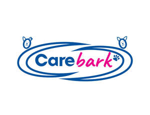
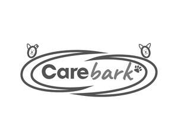

Trade Mark Journal No.2025/022 30 May 2025
UK00004204976 16 May 2025 (35,44)
Mark 1

Mark 2

- Class 35
- Advertising; Business management; Business administration; Office functions; Administration of the business affairs of franchises; Advertising consultation; Advertising flyer distribution; Advertising research; Advertising services; Advice in the running of establishments as franchises; Assistance in business management within the framework of a franchise contract; Assistance in franchised commercial business management; Assistance in product commercialization, within the framework of a franchise contract; Business administration; Business advertising services relating to franchising; Business advice relating to franchising; Business advice; Business advisory services relating to franchising; Business advisory services relating to the establishment or operation of franchises; Business analysis; Business appraisals; Business assistance relating to franchising; Business assistance relating to the establishment of franchises; Business consultancy; Business information; Business management; Business organisation; Business planning; Compilation of statistics relating to health care utilization; Dissemination of advertisements; Dissemination of advertising materials; Employment agency services relating to placement of medical or nursing personnel; Employment consultancy services; Employment consultancy; Health care cost management; Health care cost review; Management advisory services related to franchising; Marketing assistance; Marketing consultancy; Marketing information; Marketing services; Medical cost management; Negotiation of contracts with health care payors; Online advertisements; Professional recruitment services; Promotional advertising services; Providing assistance in the management of franchised businesses; Public relations services; Publicity services; Publicity; Recruitment services; Services rendered by a franchisor, namely, assistance in the running or management of industrial or commercial enterprises; Administration of the business affairs of franchises; Administrative support and data processing services; Advertising services; Advertising; Business management; Business administration; Office functions; Advice in the running of establishments as franchises; Advisory services relating to publicity for franchisees; Arranging and conducting of fairs and exhibitions for advertising purposes; Arranging and conducting of fairs and exhibitions for business purposes; Arranging of exhibitions for business purposes; Arranging of exhibitions for commercial purposes; Arranging of exhibitions for trade purposes; Assistance in business management within the framework of a franchise contract; Assistance in franchised commercial business management; Assistance in product commercialization, within the framework of a franchise contract; Business administration services; Business advertising services relating to franchising; Business advice and consultancy relating to franchising; Business advice relating to franchising; Business advice relating to restaurant franchising; Business advisory services relating to franchising; Business advisory services relating to the establishment and operation of franchises; Business advisory services; Business analysis and information services, and market research; Business assistance relating to franchising; Business assistance relating to the establishment of franchises; Business assistance, management and administrative services; Business consultancy in relation to franchising; Business consultancy services; Business management advisory services relating to franchising; Business management assistance in the field of franchising; Business management of restaurants; Business networking services; Dissemination of advertisements; Dissemination of advertising matter online; Dissemination of business information; Dissemination of commercial information; Distribution of advertising, marketing and promotional material; Electronic order processing; Employment agency or personnel recruitment services; Employment agency services relating to placement of medical personnel, nursing personnel, care workers, support workers or healthcare workers; Management advisory services related to franchising; Market research; Marketing services; Online advertisements; Online advertising on a computer network; Online business networking services; Ordering services for third parties; Procurement of goods on behalf of other businesses; Providing assistance in the field of business management within the framework of a franchise contract; Providing assistance in the field of product commercialization within the framework of a franchise contract; Providing assistance in the management of franchised businesses; Provision of business advice relating to franchising; Provision of business information relating to franchising; Public relations services; Publicity services; Services rendered by a franchisor, namely, assistance in the running or management of industrial or commercial enterprises; Trade show and commercial exhibition services; Trade show and exhibition services; Retail services, mail order services, wholesale services, or Internet retail services connected with the sale of Advertising materials, Advertising publications, Books, Clothing, Computer hardware, Computer software, Downloadable computer graphics, Downloadable publications, Downloadable software, Educational publications, Electronic publications, Footwear, Headgear, Instructional manuals, Manuals, Medical clothing, Medical hand tools, Nursing appliances, Printed publications, Printed teaching materials, Printed training materials, Promotional publications, Stationery, Teaching manuals, Uniforms for nurses, medical staff, care staff or social workers, Uniforms, Shampoos for pets, Collars for pets, Harnesses for dogs, Raincoats for pet dogs, Clothing for dogs, Dog leads, Pet leads, Beds for pets, Combs for pets, Brushes for pets, Blankets for household pets, Toys for pets, Toys for dogs, Beverages for pets, Food for dogs, Foodstuffs for dogs, Pet food for dogs, Beverages for dogs, Computer software, Electronic publications, Printed matter, Advertising material, Stationery; Information, advice or consultancy services relating to the aforesaid.
- Class 44
- Medical services; Veterinary services; Hygienic and beauty care for human beings or animals; Agriculture, horticulture and forestry services; Beauty care; Consultancy relating to health care; Consulting services relating to health care; Geriatric nursing; Health assessment surveys; Health care; Health clinic services; Healthcare services; Healthcare; Home health care services; Home-visit nursing care; Hospice services; Human hygiene or beauty care; Information services relating to health care; Managed health care services; Medical advice for individuals with disabilities; Medical care services; Medical care; Medical consultation; Medical counselling; Medical information; Medical nursing; Medical services; Mental health services; Nursing care services; Nursing care; Nursing homes; Nursing services; Palliative care; Professional consultancy relating to health care; Providing health information; Provision of nursing care; Public health counseling; Rental of medical or health care equipment; Respite care (provision of); Respite care services in the nature of home nursing aid; Respite care services in the nature of nursing aid services; Care of pet animals; Pet grooming services; Services for the care of pet animals; Services for the care of pet birds; Services for the care of pet fish; Animal healthcare services; Animal grooming services; Hygienic and beauty care for animals; Advisory services relating to the care of pet animals; Veterinary services; Therapy services; Canine-assisted therapy services; Therapeutic treatment of the body; Mental health services; Advice relating to the medical needs of elderly people; Advice relating to the personal welfare of elderly people [health]; Advisory services relating to health care; Arranging of accommodation in convalescent homes, nursing homes or rest homes; Arranging of accommodation in rest homes; At-home health care or nursing aid services; Beauty care services; Carer services or nursing services; Consultancy services relating to health care; Convalescent home services; Counseling services for the elderly, physically impaired individuals or mentally impaired individuals; Counseling services in the fields of non-medical or medical home health care services or elder care services; Day care centres for the elderly; Dietetic counselling services; Dispensing of pharmaceuticals; Domestic support home care services; Domestic support services; Domiciliary care services; Geriatric nursing services; Health care services; Health information or advice; Health monitoring services or assistance with medication; Health monitoring services provided at home; Health or medical information services; Health, medical, psychological or nutrition counselling; Home care services; Home health services, namely, short-term respite care services; Home nursing aid services; Home social care services; Human healthcare services; Human hygiene and beauty care; Hygiene care services; Hygienic and beauty care; Hygienic care for human beings; Management or operation of care homes; Medical assistance; Medical assistant services; Medical care provided in the home care; Medical information retrieval services; Medical nursing services; Medical or nursing services for the elderly; Medical services or care for senior citizens, in particular assistance with or other personal hygiene tasks for senior citizens; Medical testing for diagnostic or treatment purposes; Medical treatment services; Medical, psychological, nutritional, or dietetic counselling services; Monitoring of patients; Nursing home services; Nursing home, healthcare or rest home services including assistance with bathing, dressing, eating or medication; Nutrition consultancy; Nutrition counselling; Nutritional advice; Palliative care services; Personal care services; Personal home care services; Providing a website featuring educational information in the field of non-medical or medical home health care services, elder care services, retirement, health or aging; Providing an internet website portal featuring information in the field of non-medical or medical home health care services or elder care services; Providing information relating to nursing care services; Providing information to patients in the field of administering medications; Providing long term care facilities; Provision of care homes; Provision of health care services in assisted living facilities; Provision of health care services in domestic homes; Provision of health care services; Provision of hygiene services; Provision of in-home ancillary medical services to elderly or disabled persons; Provision of information about dietary supplements or nutrition; Provision of information regarding nursing, health care, or care services; Provision of managed home care services; Provision of medical assistance to elderly or disabled persons; Provision of personal care or domestic support; Provision of personal healthcare services or domestic assistance; Provision of respite care; Provision of staff for healthcare, hospice, nursing, therapy or non-medical home care; Rental of equipment for human healthcare; Residential medical treatment services; Respite care; Rest homes; Services for the monitoring of patients; Social care services; Information, advice or consultancy services relating to the aforesaid.
CAREMARK LIMITED
Representative: Brand Protect Limited